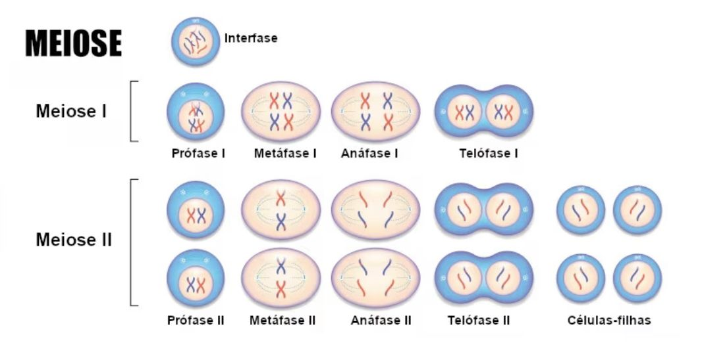
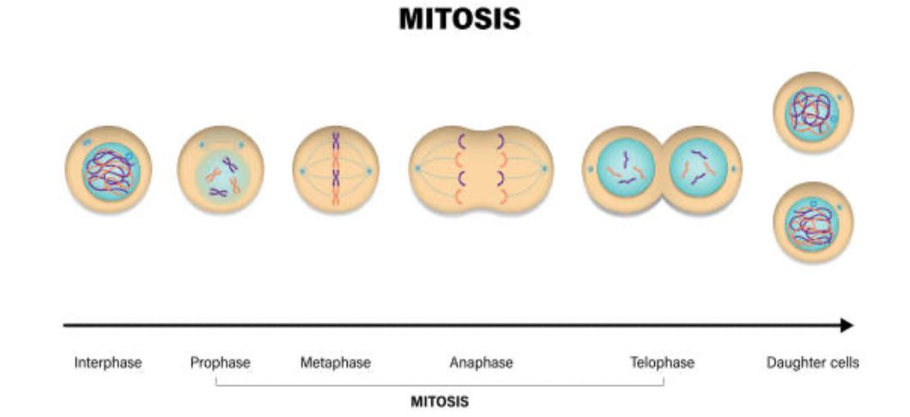
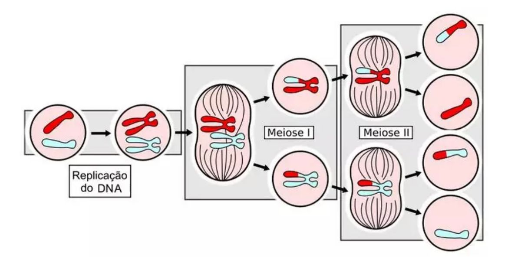
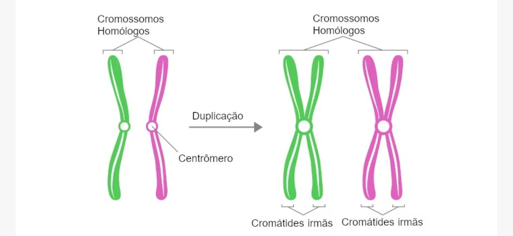

Conteúdo
O site apresenta conteúdos e explicações sobre a mitose e meiose
.
Fases da Mitose
Fases da Mitose:
A mitose consiste em quatro fases básicas: prófase, metáfase, anáfase, telófase. Alguns livros-texto listam até cinco, dividindo a prófase em uma fase anterior (chamada prófase) e uma fase posterior (chamada prometáfase). Essas fases ocorrem em uma ordem estritamente sequencial, sendo que a citocinese - o processo de divisão dos conteúdos das células para formar duas novas células - começa na anáfase ou na telófase. Dá para lembrar a ordem das fases com o famoso mnemônico: [ProMETo] a Ana Telefonar. Mas não se preocupe tanto com nomes – o mais importante é entender o que está acontecendo em cada estágio, e porque ele é importante para a divisão dos cromossomos.Prófase:
No estágio inicial da prófase, a célula começa a quebrar algumas estruturas e a formar outras, preparando o cenário para a divisão dos cromossomos. No final da prófase (chamada também de prometáfase), o fuso mitótico começa a capturar e organizar os cromossomos.Metáfase
Na metáfase, o fuso já capturou todos os cromossomos e os alinhou no meio da célula, que está pronta para a divisão. Nesta fase, os dois cinetócoros de cada cromossomo devem se ligar a microtúbulos de pólos opostos do fuso.Anáfase
Na anáfase, as cromátides irmãs se separam uma da outra e são empurradas em direção às extremidades opostas da célula. Todos esses processos são acionados por proteínas motoras, máquinas moleculares que podem “caminhar” pelas trilhas dos microtúbulos levando cargas. Na mitose, as proteínas motoras carregam cromossomos ou outros microtúbulos enquanto se deslocam.telófase
Na telófase, a célula está quase completamente dividida e começa a re-estabelecer sua estrutura normal a medida que a citocinese (divisão dos conteúdos da célula) toma lugar.Citocinese
Citocinese, a divisão do citoplasma para formar duas células novas, sobrepõe-se aos estágios finais da mitose. Ela pode começar tanto na anáfase quanto na telófase, dependendo da célula, e termina logo depois da telófase.Fases da meiose
Fases da Meiose
A meiose é um processo de divisão celular dos organismos eucariontes, em que uma célula-mãe diploide (2n) dá origem a quatro (três no caso da oogénese) células-filhas haploides (n). Tal processo é dividido em três fases: interfase, meiose I e meiose II. Tanto a interfase da meiose quanto na mitose são iguais e subdivididas em três etapas: intervalo G1, período S e intervalo G2. Ao longo desse período, a célula não está se dividindo, mas acontece uma intensa atividade que a prepara para esse momento.Meiose I
A meiose I é a primeira divisão da meiose, sendo essa etapa considerada reducional, uma vez que, no final, teremos duas células com metade do conjunto cromossômico originalPrófase I
A meiose I inicia-se com a prófase I, fase marcada pela condensação progressiva dos cromossomos, troca de material genético entre cromátides não irmãs, formação do fuso (feixe de microtúbulos), quebra do envoltório nuclear e início da migração dos cromossomos homólogos em direção à placa metafásica.Anáfase I
Na anáfase I, os cromossomos homólogos separam-se e são puxados para polos opostos da célula, sendo guiados pelas fibras do fuso. É importante deixar claro que, na anáfase I, os centrômeros não se separam e as cromátides irmãs permanecem unidas. A separação é observada exclusivamente nos homólogos.Meiose II
A meiose II é a segunda divisão da meiose, sendo essa etapa considerada equacional. entre a meiose I e a meiose II, não há nenhuma duplicação do material genético. A meiose II é bastante parecida com uma divisão mitótica. Veja a seguir as etapas da meiose II.Prófase II
Na prófase II, verificam-se a formação das fibras do fuso, a desorganização do envoltório nuclear, caso ele tenha sido reconstruído, e o desaparecimento do nucléolo. Os cromossomos, os quais ainda estão formados por duas cromátides irmãs, iniciam sua movimentação em direção à placa metafásica. Nessa etapa, os cromossomos voltam a se condensar.Metáfase II
Na metáfase II, os cromossomos estão alinhados na placa metafásica e os cinetocoros (complexo formado por proteínas e localizado no centrômero) das cromátides irmãs estão ligados aos microtúbulos dos polos opostos.Anáfase II
Na anáfase II, os centrômeros separam-se, e as cromátides, agora separadas, migram para os polos opostos. As cromátides, a partir desse momento, ficam como cromossomos individuais.Telófase II
Na telófase II, última etapa da meiose, há uma reorganização da célula. O envoltório nuclear e o nucléolo reaparecem, os cromossomos começam a se descondensar e, ao mesmo tempo em que a telófase ocorre, o citoplasma divide-se (citocinese). Nessa etapa, formam-se duas células-filhas para cada célula que iniciou a meiose II.Comparação entre mitose e meiose.
A mitose produz duas células somáticas diploides (2n) que são geneticamente idênticas umas às outras e à célula pai original, enquanto a meiose produz quatro gametas haploides (n) que são geneticamente diferentes entre si e a célula original (germe). A mitose envolve uma divisão celular, enquanto que a meiose envolve duas divisões de células.
Importância da mitose na reprodução celular.
Nos seres multicelulares, a mitose é importante para garantir o crescimento desses indivíduos e também para a regeneração dos tecidos. Nos unicelulares, a mitose tem a importante função de garantir a reprodução assexuada.
Importância da meiose na formação de gametas.
Em animais, a meiose é responsável por produzir os gametas, que, ao se fundirem, formam um indivíduo diploide, garantindo, desse modo, a manutenção do número de cromossomos da espécie.
Ilustrações dos processos mitóticos e meióticos.




Exemplos de onde ocorre cada processo no organismo.
Onde ocorre esses processos no organismo-
Processo mitose no organismo. Esse processo acontece dentro das células somáticas, ou seja, aquelas responsáveis pela formação de tecidos e órgãos nos organismos multicelulares, entre eles os tecidos do corpo humano e os orgãos do corpo humano. Processo meiose no organismo. A meiose reduz pela metade o número de cromossomos nas células-filhas. A meiose ocorre somente nas células germinativas e esporos.Mitose e Meiose
| Nome | Fases |
|---|---|
| Mitose | Profase Metafase AnafaseTelofase |
| Meiose | Meiose I Profase I Anafase I Profase II Metafase II Anafase II Telofase II |